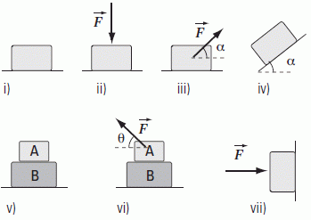
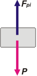
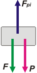
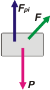
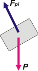
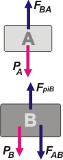
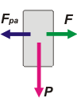

NO ME SALEN
PROBLEMAS RESUELTOS DE FÍSICA DEL CBC
(Leyes de Newton)
|
|

|
| |
FIS d10 - Considerar los sistemas i) a vii) ilustrados
en la figura. En todos los casos se desprecian
todos los rozamientos. Sabiendo que los cuerpos
están siempre en contacto con la superficie
sobre la cual están apoyados y tomando como
datos las masas, los ángulos α y θ, y la fuerza
externa F:
a) Dibujar el diagrama de cuerpo libre para
cada cuerpo.
b) Explicitar los pares acción/reacción para
cada una de las fuerzas actuantes.
c) Calcular la fuerza que ejerce sobre cada
cuerpo la superficie sobre la cual está apoyado.
d) Calcular para cada caso el vector aceleración
de cada cuerpo. |
|  |
|
Ok... piensan que van a cansarnos... ni lo sueñen. Todo consiste en confeccionar los diagramas de cuerpo libre, DCL. Vamos de a uno: |
|
|
|  |
Caso i. Las dos unas fuerzas que actúan sobre el cuerpo son dos: su propio peso, P (la fuerza con que la Tierra atrae al cuerpo) y la fuerza que el piso hace sobre el cuerpo, Fpi (que tus profes seguramente llaman normal).
Ambas fuerzas valen lo mismo: mg, pero sólo porque los cuerpos están en reposo. Si así no fuese sólo podríamos asegurar que el peso vale mg y la fuerza que hace el piso dependería de qué hace el piso.
Los pares de reacción son P', la fuerza con que el cuerpo atrae a la Tierra (se aplica sobre la Tierra) y Fpi', la fuerza que el cuerpo hace sobre el piso (se aplica sobre el piso). |
|
|
|
Vamos al segundo caso, este fue muy fácil. |
|
|
|  |
Caso ii. Ahora son tres las fuerzas que actúan sobre el cuerpo. Las dos mismas que antes (con sus mismos pares de reacción) y la fuerza F. La única que podemos saber cuánto vale es el peso, mg, ya que la fuerza que hace el piso dependerá del valor de F. Lo que podemos asegurar es que si el cuerpo está en reposo, entonces: Fpi = F + P.
Es una buena costumbre representar las fuerzas con el origen dentro del cuerpo al que se aplica (fijate cómo represente a F y cómo lo proponía el dibujo del denunciado, vos hacé como hago yo). |
|
|
 |
El par de reacción de F actúa sobre el cuerpo que la está ejerciendo, sea lo que sea.
Vamos a siguiente. |
|
|  |
Caso iii. Nuevamente son tres las fuerzas que actúan sobre el cuerpo. Las tres mismas que antes (con sus mismos pares de reacción. Podemos afirmar que Fpi + F sen α = P. Y también podemos afirmar que el cuerpo estárá acelerando hacia la derecha con una aceleración igual a: a = F cos α / m.
De los 3 casos planteados hasta ahora no cabe duda de que este es en el que la fuerza que hace el piso es la menor, veamos qué pasa con las siguientes. |
|
|
| Vamos al caso siguiente. |
|
|  |
Caso iv. Acá volvemos a tener dos fuerzas solas. El peso, P y la fuerzas que hace el piso, Fpi. Podemos asegurar dos cosas: que la fuerza que hace el piso es igual a Fpi = P . cos α, y que el cuerpo deberá estar acelerando hacia abajo con una aceleración igual a: a = g sen α.
Seguramente esto último no es tan simple como todo lo anterior. Bueno, no te preocupes, ya vas a llegar a eso. |
|
|
| Vamos al caso que viene: |
|
|  |
Caso v. Sobre el cuerpo A actúan dos fuerzas: su propio peso, PA, y la fuerza que el cuerpo B le hace al A, FBA.
Sobre el cuerpo B actúan tres: su propio peso, PB, la fuerza que A le hace a B, FAB, y la fuerza que el piso le hace a B, FpiB.
Las fuerzas FAB y FBA, son un par de acción y reacción, de acá a la China, su propio nombre los acusa. Nombrar a las fuerzas orgánicamente y no con nombres de fantasía, ayuda a identificar los pares de reacción.
El error que todo el mundo comete en este ejercicio es afirmar que el peso de B actúa sobre A. Eso es falso: el peso de B es un negocio entre B y la Tierra, y ni A ni nadie puede meterse. |
|
|
| Vamos al siguiente, ya queda poco. |
|
|  |
Caso vi. Lo único que ha cambiado respecto del caso anterior es que se agregó, sobre A, una fuerza más. Si comparamos los casos podemos decir que las fuerzas de contacto entre los curpos deben haber disminuido. Fijate. Lo mismo para el contacto entre el piso y el cuerpo B.
Además podemos asefurar que el cuerpo A debe acelerar hacia la izquierda con una aceleración a = F cos α / mA.
El cuerpo B ni se mosquea, porque no hay rozamiento. |
|
|
| Y llegamos al último. |
|
|
Caso vii. Las fuerzas que actúan son: esa externa que apunta hacia la pared y no sabemos quién la hace, F. La fuerza que la pared hace sobre el cuerpo, Fpa, y su propio peso, P.
Podemos asegurar que Fpa y F son iguales en módulo. También podemos asegurar que el cuerpo estará acelerando hacia abajo con una aceleración igual a g. |
|
|
| Consideraciones generales. Habrás notado que no le di mucha importancia al largo de los vectores fuerza que dibujé. Al menos ciertas relaciones de largo entre ellos podría haber representado correctamente. Bien, en general no es necesario confeccionar los DCL con ese grado de precisión. Pero si tenés tiempo y ganas, no es una mala idea. |
|
| DESAFIO: |
|
| Algunos derechos reservados.
Severísimas penas a quien orinase en un paso a nivel sobre la vía electrificada. Última actualización mar-16. Buenos Aires, Argentina. |
|
|
|